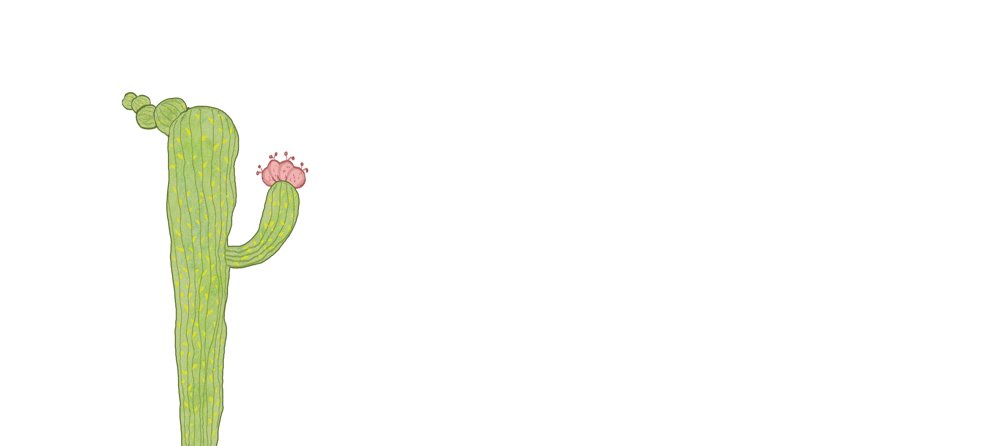

<!DOCTYPE html>
<html lang="en">

<head>
    <meta charset="UTF-8">
    <meta name="viewport" content="width=device-width,initial-scale=1.0,maximum-scale=1.0,minimum-scale=1.0,user-scalable=no">
    <meta http-equiv="X-UA-Compatible" content="ie=edge">
    <title>zsiga：荆棘丛中，自由生长</title>
    <embed src="./source/backgroundmusic.mp3" autostart="true" loop="true" hidden="true" id="backgroundmusic"></embed>
    <style>
        html,
        body {
            width: 100%;
            height: 100%;
            position: relative;
            margin: 0;
            padding: 0;
        }

        .box {
            /* 注意,旋转方向后的box的宽高方向依然保持旋转前的宽高 ，所以旋转后的宽高和实际的宽高显示有区别*/
            width: 100vh;
            height: 100vw;
            position: absolute;
            top: 50%;
            left: 50%;
            -webkit-transform-origin: center center;
            transform-origin: center center;
            -webkit-transform: translate(-50%, -50%) rotate(90deg);
            transform: translate(-50%, -50%) rotate(90deg);

        }
/* 　　　　　orientation:landscape代表宽的长度大于高的长度 */
        @media (orientation:landscape) {
            .box {
                width: 100%;
                height: 100%;
                top: 0;
                left: 0;
                -webkit-transform: rotate(0);
                transform: rotate(0);
            }
        }
        * {
            margin: 0px;
            padding: 0px;
        }

        body {
            margin: 0;
            overflow: hidden;
            display: flex;
            justify-content: center;
            align-items: center;
            height: 100vh;
            background-image: url(./source/background_h5.png);
            background-size: cover;
            background-repeat: no-repeat;
            cursor: url("./source/sword.png"),pointer;
        }

        .container {
            position: relative;
            width: 100%;
            height: 100%;
            overflow: hidden;
        }

        /* .center, .left, .right {
            position: absolute;
            top: 50%;
            left: 50%;
            transform: translate(-50%, -50%);
        } */


        /* 星星的样式 */
        .star img {
            position: absolute;
            top: 50%;
            left: 50%;
            transform: translate(-50%, -50%);
        }

        #star-1 {
            position: relative;
            width: 50px;
            top: 15px;
            left: 210px;
            animation: star-1 2.5s infinite;
        }
        @keyframes star-1 {
            0% {transform:  scale(1) rotate(0deg);filter: drop-shadow(0 0 1px rgba(255, 255, 255, 0.7));}
            50% {transform:  scale(0.8) rotate(15deg);filter: drop-shadow(0 0 10px rgba(255, 255, 255, 0.7));}
            100% {transform:  scale(1) rotate(0deg);filter: drop-shadow(0 0 1px rgba(255, 255, 255, 0.7));}
        }

        #star-2 {
            position: relative;
            width: 50px;
            top: 50px;
            left: 465px;
            animation: star-2 2.2s infinite;
        }
        
        @keyframes star-2 {
            0% {transform:  scale(0.6) rotate(-25deg);filter: drop-shadow(0 0 2px rgba(255, 255, 255, 1));}
            50% {transform:  scale(0.8) rotate(-5deg);filter: drop-shadow(0 0 10px rgba(255, 255, 255, 1));}
            100% {transform:  scale(0.6) rotate(-25deg);filter: drop-shadow(0 0 2px rgba(255, 255, 255, 1));}
        }

        #star-3 {
            position: relative;
            width: 50px;
            top: 100px;
            left: 185px;
            animation: star-3 6s infinite;
        }
        
        @keyframes star-3 {
            0% {transform:  scale(0.35) rotate(0deg);filter: drop-shadow(0 0 5px rgba(255, 255, 255, 0.7));}
            50% {transform:  scale(0.5) rotate(370deg);filter: drop-shadow(0 0 10px rgba(255, 255, 255, 0.7));}
            100% {transform:  scale(0.35) rotate(0deg);filter: drop-shadow(0 0 5px rgba(255, 255, 255, 0.7));}
        }

        #star-4 {
            position: relative;
            width: 50px;
            top: 35px;
            left: -110px;
            animation: star-4 2.4s infinite;
        }
        @keyframes star-4 {
            0% {transform:  scale(0.6) rotate(-35deg);filter: drop-shadow(0 0 1px rgba(255, 255, 255, 0.7));}
            50% {transform:  scale(0.2) rotate(0deg);filter: drop-shadow(0 0 px rgba(255, 255, 255, 0.7));}
            100% {transform:  scale(0.6) rotate(-35deg);filter: drop-shadow(0 0 1px rgba(255, 255, 255, 0.7));}
        }

        #star-5 {
            position: relative;
            width: 50px;
            top: 50px;
            left: 450px;
            animation: star-5 7s infinite;
            
        }
        @keyframes star-5 {
            0% {transform:  scale(0.9) rotate(50deg);filter: drop-shadow(0 0 1px rgba(255, 255, 255, 0.7));}
            50% {transform:  scale(1.2) rotate(-20deg);filter: drop-shadow(0 0 6px rgba(255, 255, 255, 0.7));}
            100% {transform:  scale(0.9) rotate(50deg);filter: drop-shadow(0 0 1px rgba(255, 255, 255, 0.7));}
        }

        /* 星球的样式 */
        .planet img {
            position: absolute;
            top: 50%;
            left: 50%;
            transform: translate(-50%, -50%);
        }

        #smoke-1 {
            position: relative;
            width: 90px;
            left: 200px;
            top: 310px;
            transition: transform 0.2s ease;/* Add transition for smooth hover effect */
            animation: smoke-1 6s infinite ease;
        }
        @keyframes smoke-1 {
            0% {filter: drop-shadow(0 0 70px rgb(150, 134, 97));}
            50% {filter: drop-shadow(0 0 10px rgb(151, 138, 99));
                transform: translate(-50%, -50%) translateY(-195px) translateX(-30px) scaleY(1.1);}
            100% {filter: drop-shadow(0 0 70px rgb(157, 141, 98));}
        }
        
        #smoke-2 {
            position: relative;
            width: 80px;
            left: 175px;
            top: 250px;
            transition: transform 0.2s ease;/* Add transition for smooth hover effect */
            animation: smoke-2 6s infinite ease;
        }
        @keyframes smoke-2 {
            0% {filter: drop-shadow(0 0 70px rgb(160, 141, 97));
                transform: translate(-50%, -50%) translateY(-170px) scaleY(1.1);}
            50% {filter: drop-shadow(0 0 10px rgb(159, 145, 102));
                transform: translate(-50%, -50%) translateY(0px) scaleY(1);}
            100% {filter: drop-shadow(0 0 70px rgb(150, 135, 88));
                transform: translate(-50%, -50%) translateY(-170px) scaleY(1.1);}
        }
        #smoke-2:hover {
            filter: drop-shadow(0 0 10px rgba(255, 255, 255, 0.7));
            transform: translate(-50%, -50%) translateY(-210px) scaleY(1.3); /* Combine translate and scale */
        }
        
        #planet-ground {
            position: relative;
            width: 950px;
            top: 22px;
            left: 450px;
        }

        /* 火焰的样式 */
        #fire-1 {
            position: relative;
            width: 75px;
            top: -200px;
            left: 35px;
            filter: drop-shadow(0 0 5px rgba(243, 188, 94, 0.893));
            animation: fire-1 3s infinite ease;
        }
        @keyframes fire-1 {
            0% {transform: rotate(0deg) scaleX(1);}
            25% {transform: rotate(10deg) scaleX(0.9);}
            50% {transform: rotate(0deg) scaleX(1);}
            75% {transform: rotate(-10deg) scaleX(0.9);}
            100% {transform: rotate(0deg) scaleX(1);}
        }
        
        
        #name-zsiga {
            position: relative;
            width: 90px;
            top: -280px;
            left: 480px; 
            filter: drop-shadow(0 0 5px rgba(255, 175, 175, 0.893));
            animation: name-zsiga 2.8s infinite;
        }
        @keyframes name-zsiga {
            0% {transform:  scale(1) translateY(0px);opacity: 100%;}
            50% {transform:  scale(0.5) translateY(165px);opacity: 0%;}
            100% {transform:  scale(1) translateY(0px);opacity: 100%;}
        }
        #name-zsiga:hover {
            filter: drop-shadow(0 0 20px rgb(255, 206, 137));}

        #fire-2 {
            position: relative;
            width: 50px;
            top: -250px;
            left: 310px; 
            filter: drop-shadow(0 0 10px rgba(255, 194, 125, 0.893));
            animation: fire-2 1.2s infinite;
        }
        @keyframes fire-2 {
            0% {transform:  scaleY(0.75) scaleX(0.75) rotate(0deg);}
            50% {transform:  scaleY(0.85) scaleX(0.75) rotate(15deg);}
            100% {transform:  scaleY(0.75) scaleX(0.75) rotate(0deg);}
        }
       
        
        #fire-3 {
            position: relative;
            width: 90px;
            top: -240px;
            left: 485px;
            filter: drop-shadow(0 0 5px rgba(255, 193, 117, 0.893));
            animation: fire-3 1.3s infinite;
        }
        @keyframes fire-3 {
            0% {transform:  scaleX(0.65);}
            50% {transform:  scaleX(0.7);}
            100% {transform:  scaleX(0.65);}
        }
       

        .center img {
            width: 200px; /* Adjust the size as needed */
            height: auto;
            position: absolute;
            top: 60%;
            left: 50%;
            transform: translate(-50%, -50%);
            transition: transform 0.5s;
        }
        #dress-white, #dress-brown, #dress-skin {
            cursor: pointer;
        }
        #dress-brown {
            animation: dress-brown 4s infinite;
        }
        @keyframes dress-brown {
            0% {filter: drop-shadow(0 0 40px rgb(255, 253, 251));}
            50% {filter: drop-shadow(0 0 20px rgb(255, 242, 230));}
            100% {filter: drop-shadow(0 0 40px rgb(255, 254, 254));}
        }
        

        .left img {
            width: 1010px; /* Adjust the size as needed */
            height: auto;
            position: absolute;
            top: 67.5%;
            left: 50%;
            transform: translate(-50%, -50%);
            transition: transform 0.5s;
        }
        #logo {
            filter: drop-shadow(0 0 10px rgb(249, 236, 219));}
    </style>
</head>

<body>
    <div class="box">
        <div class="container">
            <div class="star">
                
                
                
                
                
            </div>
            <div class="planet">
                
                
                
                
                
                
                
            </div>
            
            <div class="center">
                
                
                
                      
            </div>
            <!-- <div class="left">
                
                
                
                
                
                
                
                
                
                
                
                
                
                
                
                
                  
            </div> -->
           
            <audio id="soundVisible" src="./source/tongzhen.m4a"></audio>
            <audio id="soundHidden" src="./source/fanpan.m4a"></audio>  
        </div>
        <script>
            document.body.addEventListener('click', function() {
                var img1 = document.getElementById('dress-white');
                var img2 = document.getElementById('dress-brown');
                var img3 = document.getElementById('dress-skin');
                var soundVisible = document.getElementById('soundVisible');
                var soundHidden = document.getElementById('soundHidden');
    
                // Stop any currently playing sound
                soundVisible.pause();
                soundVisible.currentTime = 0;
                soundHidden.pause();
                soundHidden.currentTime = 0;
    
                // Toggle the visibility of the image and play the corresponding sound
                if (img1.style.visibility === 'hidden') {
                    img1.style.visibility = 'visible';
                    img2.style.visibility = 'visible';
                    img3.style.visibility = 'visible';
                    soundVisible.play();
                } else {
                    img1.style.visibility = 'hidden';
                    img2.style.visibility = 'hidden';
                    img3.style.visibility = 'hidden';
                    soundHidden.play();
                }
            });
        </script>
        <!-- <script>
            let scrollPosition = 0;
            const maxScrollPosition = 500;  // Max scroll limit
            const minScrollPosition = 0;    // Min scroll limit
    
            // Example distances for each image
            const leftSpeedsX = [-0.3, 0.6, 0.2, -0.5, 0.4, -0.6, 0.1, 0.3, 0, -0.2, 0.4, 0, 0.5, 0.35, -0.25, -0.45, 0];
            const leftSpeedsY = [2.0, 1.5, 1.4, 1.6, 1.5, 1.7, 1.6, 1.65, 1.8, 1.5, 1.9, 2.2, 1.6, 1.7, 1.8, 1.5, 1.6];
            const centerSpeedY = 1.4;
    
            window.addEventListener('wheel', (event) => {
                const delta = Math.sign(event.deltaY);
                const leftImages = document.querySelectorAll('.left img');
                const centerImages = document.querySelectorAll('.center img');
    
                if (delta > 0) {  // Scroll down
                    scrollPosition = Math.min(scrollPosition + 10, maxScrollPosition);
                } else {  // Scroll up
                    scrollPosition = Math.max(scrollPosition - 10, minScrollPosition);
                }
    
                leftImages.forEach((img, index) => {
                    const distanceX = scrollPosition * leftSpeedsX[index];
                    const distanceY = scrollPosition * leftSpeedsY[index];
                    img.style.transform = `translate(calc(-50% - ${distanceX}px), calc(-50% + ${distanceY}px))`;
                });
    
    
                centerImages.forEach(img => {
                    const distanceY = scrollPosition * centerSpeedY;
                    img.style.transform = `translate(-50%, calc(-50% + ${distanceY}px))`;
                });
            });
        </script> -->
    </div>
</body>

</html>
